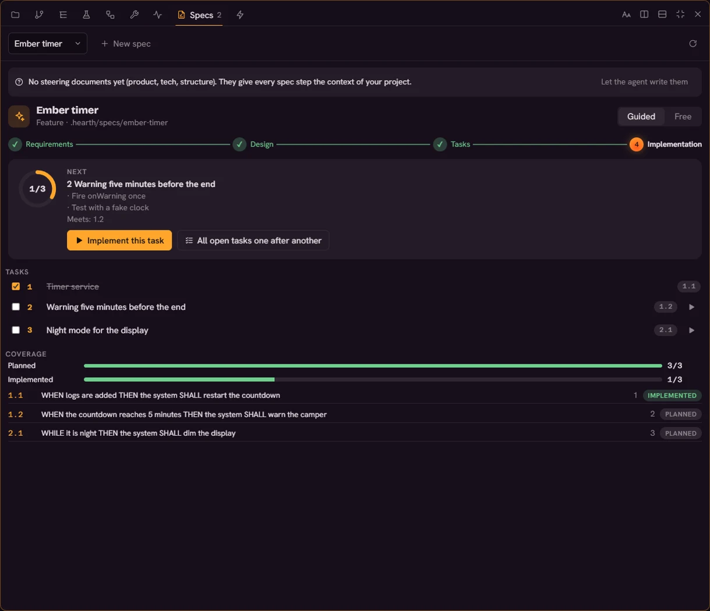

Dein Agent. Dein Plan. Unser Feuerring.
Claude Code, Codex, Copilot & Co. laufen auf deinem Windows-PC wie gewohnt – nur in einer Sandbox, die deine Schlüssel und den Rest deines Profils draußen hält. Ohne WSL, ohne Adminrechte. Und Hearth führt sie von der Spec bis zum fertigen Code.
PS>irm https://pvanissem.github.io/hearth-ide-windows/install.ps1 | iex
Noch nicht signiert: Ist die intelligente App-Steuerung (Smart App Control) eingeschaltet, blockiert Windows den Installer und den Sandbox-Helper. Signierte Builds kommen als Nächstes.
- v0.3 frühe Version
- Windows 10 / 11
- x64
- Lizenz MIT
- Sandbox AppContainer
C:\dein-projektlesen + schreibenNeu in v0.3 · Spec-getriebene Entwicklung
Erst die Spec. Dann der Code.
Hearth bringt deinen Agenten in vier Schritten von der Idee zum fertigen Code. Jeder Schritt ist ein Dokument, das du liest und freigibst, bevor der nächste startet. Geführt, wenn du einen Coach willst – frei, wenn du den Weg kennst.
- requirements.md
Anforderungen
User Stories und Akzeptanzkriterien in EARS:
du gibst freiWHEN … THEN the system SHALL … - design.md
Design
Architektur, Schnittstellen, Daten, Fehler und Tests – auf Basis der freigegebenen Anforderungen.
du gibst frei - tasks.md
Aufgaben
Kleine Umsetzungsschritte, jeder mit den Kriterien, die er erfüllt.
du gibst frei - ▶ Aufgabe starten
Umsetzung
Eine Aufgabe nach der anderen, abgehakt, sobald sie steht, und am Ende gegen jedes Kriterium geprüft.
 Qualitätsprüfung
Lesen, überarbeiten, freigeben
Qualitätsprüfung
Lesen, überarbeiten, freigeben

Fortschritt & Abdeckung Als NächstesWas es zu mehr als einer Vorlage macht.
- QualitätsprüfungNicht testbare Kriterien, fehlende Stories, offene Fragen, Anforderungen ohne Aufgabe. Jeder Befund mit „Vom Agenten beheben lassen“.
- AbdeckungJedes Akzeptanzkriterium mit den Aufgaben, die es umsetzen – von geplant bis erledigt.
- Erst fragenDer Agent liest deinen Code und stellt bis zu fünf Rückfragen, bevor er eine Zeile schreibt.
- Drei ArtenFeature, Bugfix mit Regressionsschutz, Refactoring mit dem, was sich nicht ändern darf.
- Geführt oder freiEin Coach mit Checklisten oder alle Dokumente auf einmal. Jederzeit umschaltbar.
- Dein AgentClaude Code, Codex, Copilot, OpenCode oder Gemini, in der Sandbox. Specs sind Markdown in deinem Repo,
.kiro/specsfunktioniert auch.
Agent Hooks hüten das Feuer.
Endet ein Durchgang, schaut Hearth, was der Agent geändert hat, und führt deine Hooks aus: ein Auftrag an den Agenten oder ein Befehl in der Sandbox.
- Agent speichert
\.cs$„Passe die Tests für diese Dateien an und führe sie aus.“ - Agent speichert
\.tsx?$npm run lintin der Sandbox. Schlägt es fehl, bekommt der Agent die Ausgabe. - Agent beendet seinen Durchgang„Prüfe deinen Diff auf Fehler, fehlende Tests und Reste.“
- Agent ändert
requirements.md„Bring Design und Aufgaben wieder in Einklang.“
Hooks können sich nicht aufschaukeln: Ein Durchgang, den ein Hook gestartet hat, löst keine Hooks aus. Eine Hook-Datei aus dem Repository oder vom Agenten läuft erst, wenn du genau diesen Inhalt erlaubt hast. Kiros .kiro/hooks werden mitgelesen.
Was im Ring bleibt.
Hearth startet jeden Agenten als Windows-AppContainer-Prozess – die Isolation, die auch Chromium und Store-Apps nutzen. Nichts zu installieren, kein WSL, keine Adminrechte. Im Ring arbeitet er frei:
C:\dein-projektlesen und schreiben- ein eigenes Home pro Agent, mit seinem Login
- deine Werkzeuge im
PATH, nur lesend - das Internet – oder gar nichts im Offline-Modus
Bleibt draußen:
SSH-Schlüssel
Shell-Konfiguration
Cloud-Zugangsdaten
Cookies, Passwörter, Sitzungen
der Rest deines Profils
für den Agenten schreibgeschützt
Ehrliche Grenzen: Windows lässt einen AppContainer nur ganz oder gar nicht ins Internet, eine Liste erlaubter Domains wie auf dem Mac gibt es daher nicht. API-Schlüssel, die du für Agenten hinterlegst, sind für sie sichtbar. Git läuft auf deinem PC, mit ausgeschalteten Hooks.
Deine Agenten, deine Logins.
Hearth bringt kein eigenes Modell mit. Es hält die Agenten im Zaum, für die du schon bezahlst.
- Claude Codedein Claude-Abo, über die offizielle CLIStatus in der Inbox über Hooks
- CodexChatGPT-Login oder API-KeyStatus über notify
- GitHub Copilot CLIdein GitHub-Kontoim Terminal-Chat
- OpenCodejeder Anbieter, den OpenCode kenntim Terminal-Chat
- Gemini CLIdein Google-Kontoim Terminal-Chat
Jedes Programm im Terminal kann seinen Zustand selbst melden, mit dem Program Status Protocol (OSC 7501): arbeitet, blockiert, fertig – samt Fortschritt.
In drei Zügen entfacht.
Kein Konto, keine Konfiguration. Hearth bringt die Sandbox, du bringst deine Agenten.
Installieren
Der Befehl oben lädt den Installer des neuesten Release, prüft seine SHA-512-Prüfsumme und installiert Hearth in dein Benutzerprofil. Nochmal ausführen aktualisiert.
Ordner wählen
Dein Projektordner ist das Innere des Rings: der einzige Ort, an dem der Agent schreiben darf. Oder lass Hearth ein Repository klonen.
Agent starten
Claude Code, Codex, Copilot, OpenCode oder Gemini – mit deinem Login, Modell und Aufwand, im Terminal des Chatbereichs.
Jedes Feuer in einem Fenster.
Eine Inbox – als Liste oder Board – zeigt, welcher Agent arbeitet, wartet oder fertig ist, und wie lange schon. Daneben: Dateien, Git mit Pull-Request-Review, Editor, Specs, Tests und Builds – die ebenfalls in der Sandbox laufen.

Ehrlicher Stand: v0.3.
Früh, aber benutzbar – und auf dem Stand der Mac-Version 0.16. Das funktioniert heute:
Funktioniert
- Agenten als Terminal im Chatbereich
- Geführter Spec-Modus mit Qualitätsprüfung und Abdeckung
- Agent Hooks, kompatibel mit Kiro
- Inbox und Board mit Status, Timern und Benachrichtigungen
- Git: Pull Requests reviewen, kommentieren und mergen
- Commit-Nachrichten von deinem Agenten
- Build & Deployment und Tests in der Sandbox
- Sitzung fortsetzen oder neu starten
- CI/CD für GitLab und GitHub Actions
- Deutsch und Englisch
- Überall suchen mit doppeltem Shift
- Themes: Hearth Light, Darcula, Storm
Als Nächstes
- Signierte Builds (die intelligente App-Steuerung kann den unsignierten Sandbox-Helper heute blockieren)
- Nativer Chat über das Agent Client Protocol
- Bereiche in eigenen Fenstern
Voraussetzungen
- Windows 10 oder 11, x64
- mindestens eine Agent-CLI im
PATH - Git für den Git-Bereich
Feuer frei.
PS>irm https://pvanissem.github.io/hearth-ide-windows/install.ps1 | iex